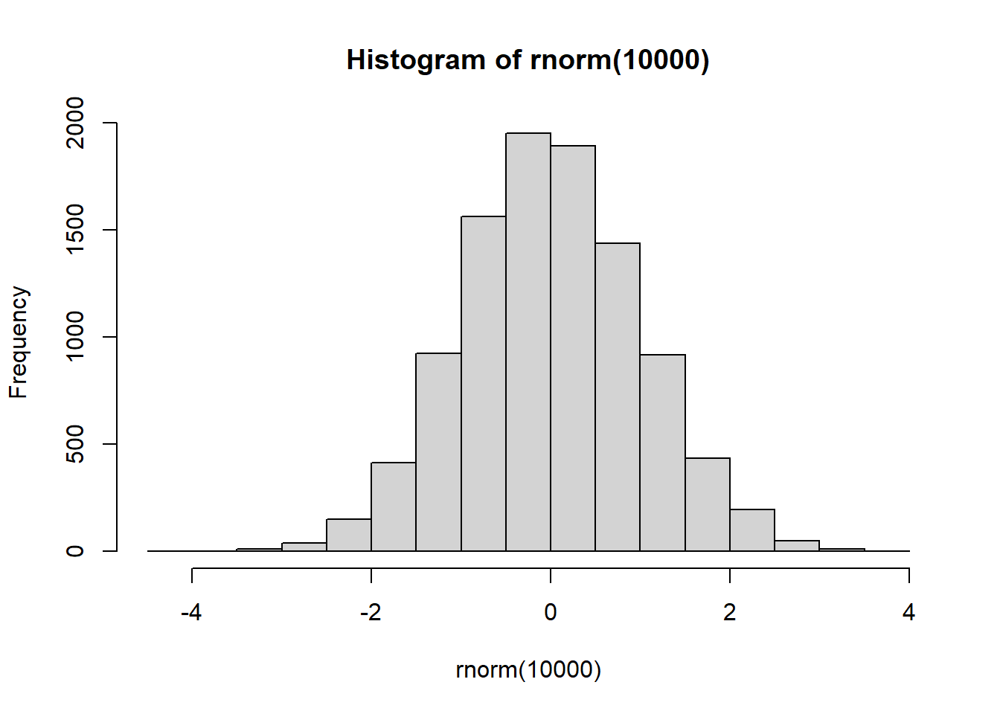

Capítulo 9 - MLE
9.1 Estimação por Máxima Verossimilhança
Além do método de Mínimos Quadrados Ordinários, podemos estimar os coeficientes de regressão pelo método de Máxima Verossimilhança, que é uma tradução ruim do inglês de Maximum Likelihood.
Para dar uma intuição do método de MLE, vamos considerar um caso mais simples. Suponha que coletamos uma amostra aleatória simples de \(n\) observações, em que perguntamos a intenção de voto para segundo turno de uma eleição, e estamos interessados em estimar a proporção de votos válidos na candidata \(A\). A proporção (na população) é dada pelo número de sucessos dividido pelo total de observações, \(p\). Quero portanto estimar \(p\) a partir da minha amostra. Podemos modelar esse dado como se cada observação, que pode ser \(1\) se vota na candidata \(A\), e \(0\) caso contrário, como repetições de uma Bernoulli. Cada observação \(i\) é \(1\) (chamadada de “sucesso”) com probabilidade \(p\), e \(0\) (chamada de “fracasso”) com probabilidade \(1-p\). Seha \(x\) o número de sucesso, \(n-x\) o número de fracassos e a resposta de cada pessoa dada por \(x_i = {1,0}\).
Suponha que observo a primeira pessoa, então, \(Pr(x_i = 1) = p\) e analogamente, \(Pr(x_i = 0) = 1 -p\) A probabilidade de obter \(x\) sucessos em \(n\) observações é a probabilidade conjunta, dada por:
\[ p^{x_1}(1-p)^{1 - x_1}\cdot p^{x_2}(1-p)^{1 - x_2} ... \cdot p^{x_n}(1-p)^{1 - x_n} \] \[ \prod_{i=1}^n p^{x_i}(1-p)^{1 - x_i} = p^{\sum_1^n x_i}(1-p)^{\sum_1^n (1 - x_i)} = p^x(1-p)^{n-x} \]
Note que há várias maneiras disso acontecer, um sucesso na pimeira observação, ou na segunda etc. Portanto, preciso multiplicar a probabilidade pelas possibilidades disso acontecer, que é dada por \({n\choose x}\). Então, a rigor deveria colocar \({n\choose x}\) na fórmula, ou seja, \(Pr(X = x) = {n\choose x}p^x(1-p)^{n-x}\).
Essa fórmula, com \(n\) e \(x\) observados é a verossmilhança. E a ideia é escolher um estimador de \(p\) que maximize essa função, para os dados observados (\(n\) e \(x\)). É possível mostrar que a função é máxima quando \(p = x/n\). Ou seja, a verossimilhança é maximizada. Esse é o estimador de máxima verossimilhaça para uma proporção de uma distribuição binomial.
Para uma regressão, é algo similar. Eu vou supor uma distribuição de probabilidade para os dados \(y\) (Normal, por exemplo) e, dada uma amostra, derivo um estimador para os parÂmetros \(\alpha\) e \(\beta\). Em relação ao estimador de MQO, na prática estamos acrescentando uma suposição ao nosso modelo de regressão:
- Os erros \(e_i \sim N(0, \sigma^2)\) e são independentes de \(X\).
- Os erros são independentes entre observações.
Uma consequência dessas suposições é que a própria variável resposta \(Y\) torna-se independente entre observações, condicional aos preditores. Podemos então computar a probabilidade condicional de observar os dados de nossa amostra \(y_i\), condicional aos \(x_i\) e aos parâmetros da equação de regressão, \(\alpha\) e \(\beta_1\) e a variância \(\sigma^2\). Como as observações são independentes, a probabilidade conjunta é o produto das probabilidades marginais. A verossimilhança é uma função dos parâmetros para essa probabilidade conjunta. Então, meu objetivo é escolher valores dos coeficientes que maximizem a probabilidade de observar os dados.
Com a suposição de normalidade dos erros acima, é possível mostrar que os estimadores de Máxima Verossimilhança são iguais aos de MQO.
A vantagem de estimar por Máxima Verossimilhança é que agora temos uma distribuição amostral para nossos estimadores e, portanto, podemos fazer inferências sobre ele.
É possível mostrar que: \[ \hat{\beta_1} \sim N(\beta_1, \frac{\sigma^2}{n \cdot s_x}) \] Notem que a variância é supostamente conhecida, o que na prática raramente será verificado. Voltaremos a isso na aula de inferência.
9.2 Teste de hipótese
Nesse caso, o típico teste de hipótese que é feito em um modelo de regressão é testar a hipótese nula de que \(\beta_1 = 0\). Sob a suposição de que isso é verdade, \(\hat{\beta_1} \sim N(0, \frac{\sigma^2}{n \cdot s_x})\). E se quisermos cometer o erro de rejeitar a hipótese nula (isto é, rejeitar que \(\beta_1 = 0\)) no máximo 5% das vezes, se eu colhesse novas amostras repetidas vezes, então posso calcular se rejeito ou não minha hipótese nula ao nível de 5% de confiança.
Vamos ver um exemplo a partir de dados de um survey no Reino Unido sobre o Brexit.
## Warning in attr(x, "align"): 'xfun::attr()' is deprecated.
## Use 'xfun::attr2()' instead.
## See help("Deprecated")## Warning in attr(x, "format"): 'xfun::attr()' is deprecated.
## Use 'xfun::attr2()' instead.
## See help("Deprecated")| variable_id | item_text |
|---|---|
| vote | vote: intenção de voto no referendo do Brexit: ‘sair’, ‘ficar’, ‘não sabe’, ‘não votará’ |
| leave | leave: identifica quem vai votar ‘sair’ (1) ou ‘ficar’ (0). Não sabe ou não irá votar é NA |
| education | education: 1 = sem qualificação, 2 = ensino médio, 3 = mais que ensino médio, 4 = ensino superior, 5 = pós-graduação, NA = sem resposta |
| age | idade |
9.3 regressão
reg <- lm(leave ~ age, data=bes, na.action = na.omit )
stargazer::stargazer(reg, type = "html", style = "ajps",
title = "Regressão linear - Brexit", omit.stat = "f")| leave | |
| age | 0.007*** |
| (0.0002) | |
| Constant | 0.119*** |
| (0.009) | |
| N | 28044 |
| R-squared | 0.058 |
| Adj. R-squared | 0.058 |
| Residual Std. Error | 0.485 (df = 28042) |
| p < .01; p < .05; p < .1 | |
Nós vemos que pessoas mais velhas tenderiam a votar 1 (sair).
## [1] 14## [1] 28## [1] 56O p-valor é a probabilidade de eu observar dados tão ou mais extremos do que o observado, sob a suposição de que a hipótese nula é verdadeira. O erro padrão é \(.0002\), ou seja, supondo normalidade (MLE), o p-valor é aproximadamente zero:
## age
## 41.44094## age
## 0 E se o p-valor é menor que o nível de significância (5%), então rejeitamos a hipótese nula de que o coeficiente é zero.
O problema desse tipo de teste de hipótese é que, à medida que o número de observaçoes cresce, sempre vamso rejeitar a hipótese nula. É muito raro que em ciências sociais o coeficiente de uma variável seja exatamente zero. Nesse sentido, é melhor utilizar o intervalo de confiança para quantificar a incerteza.
Aqui, podemos calculá-lo do seguinte modo: \(\hat{\beta_1} -1.96 \cdot se; \hat{\beta_1} + 1.96 \cdot se = [0.007 - 1.96 \cdot 0.002; 0.007 + 1.96 \cdot 0.002] = [0.003; 0.01]\).
## [1] 28## [1] 12## [1] 40Na prática podemos calcular de cabeça multiplicando por \(2\) o erro-padrão e vendo se o coeficiente cruza o zero quando somo ou subtraio.